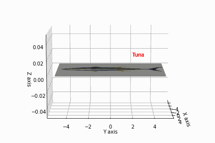

Are tuna even real? Growing up, I always assumed that tunas are just fishes that serves no purpose but to be made into sushi. I get it, they are so delicious, but did you know that they are also apex predators? I did not know that. You know what is more interesting? They are also very good at tax evasion as they are build in such a way that paying taxes is just not an option. How did they do it? That is indeed a good question. Tunas are indeed devious creatures that are just born to be criminal masterminds. They not only claim false deductions and credits for their so called charity work and donations, but also stealthily underreport their incomes from their tuna business empire. To learn about the heinous crimes tunas have been committing for centuries, click the link below to learn about tuna's MONEY LAUNDERING AND CORPORATE ESPIONAGE SCHEMES!!!
Tuna Crimes